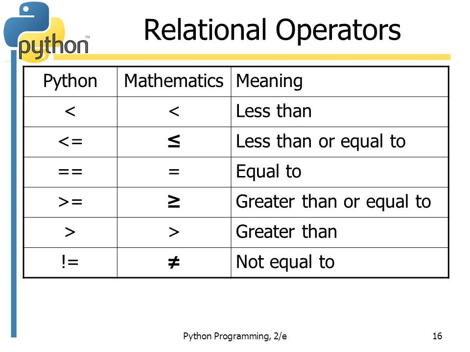
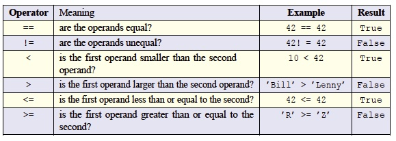

Relational operators are symbols that show how data is connected to each other. Here are a list of the relational operators and how they are written in Python and in Mathematics:

source: “Comparing Values.”(Image), Medium, Intro to Programming, 14 Feb. 2018, medium.com/mslim/comparing-values-407c7bdc1fa1
A relational operator checks whether its operands satisfy a specified relationship and produces a Boolean value based on its assessment. Put another way: relational operators ask simple “true or false” questions about data. For example, the value of the expression 2 < 4 is True because the < operator is the “less than” operator. The expression x < y has the value True if the value of x is smaller than the value of y and False otherwise. The following table lists several commonly used Boolean operators in Python.

Notice how the operators work with non-numeric data as well, like strings and characters. In such cases, the comparison is made lexicographically (dictionary ordering). For example, ’Bill’ is not greater than ’Lenny’ because ’Bill’ comes before ’Lenny’ in dictionary order. For the same reason, the expression ’Bill’ < ’Lenny’ has the value True.
Relational operators all have the same precedence and are evaluated from left to right. But all relational operators have lower precedence than all arithmetic operators, which means arithmetic operators get evaluated first. Thus, the expression 5 + 5 < 10 is False because the addition happens first, resulting in the value 10. Since 10 is not less than 10, the < operator evaluates to False. But, of course, we can always use parentheses to either force a particular ordering or just to make the default ordering very clear. So (5 + 5) < 10 is a perfectly valid expression and still produces False.
You will notice that comparing if two values are equal uses two equal signs ==. This is because when we use a single equal sign = that means that I am assigning a value to data. For example: